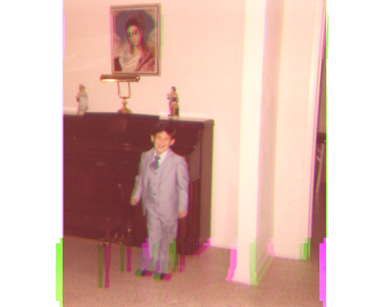
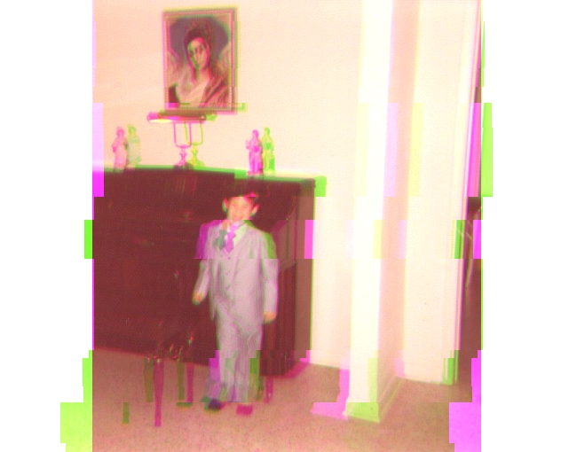
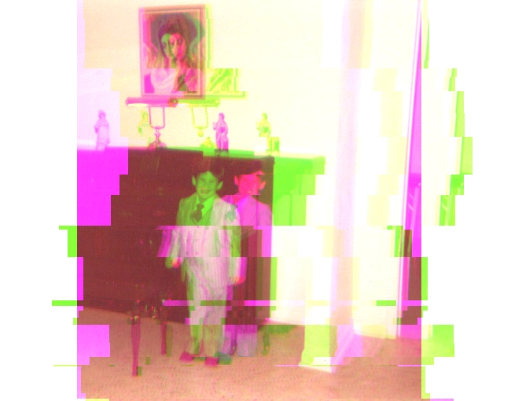
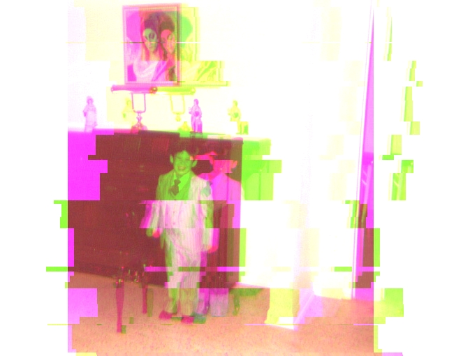
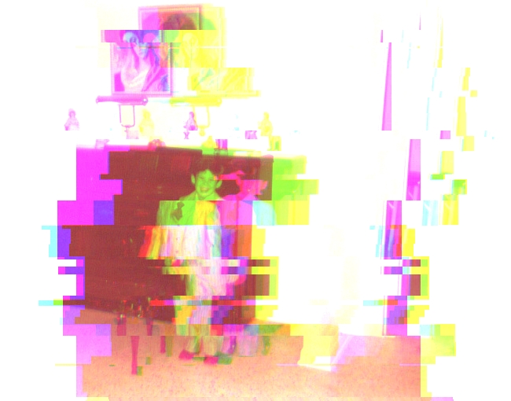
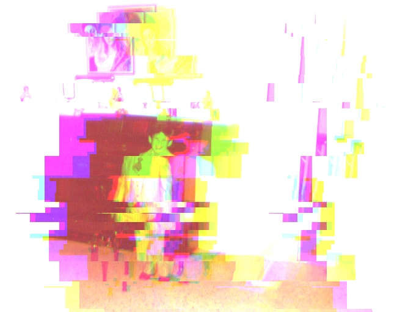
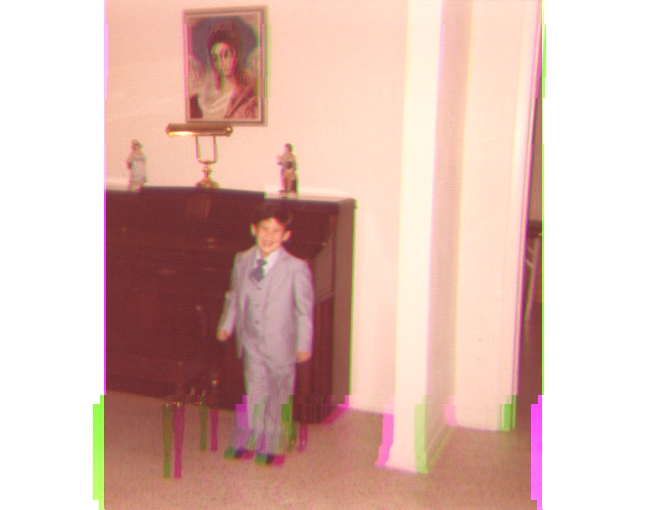
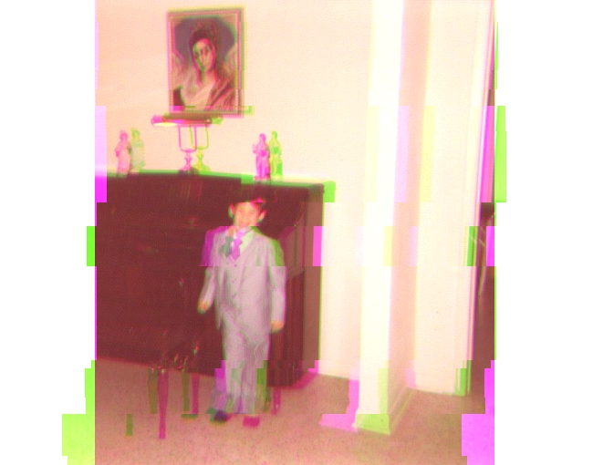
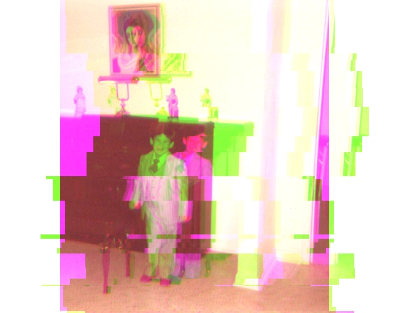
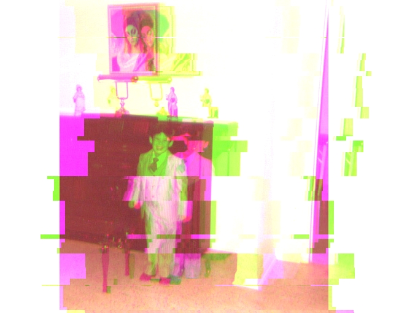
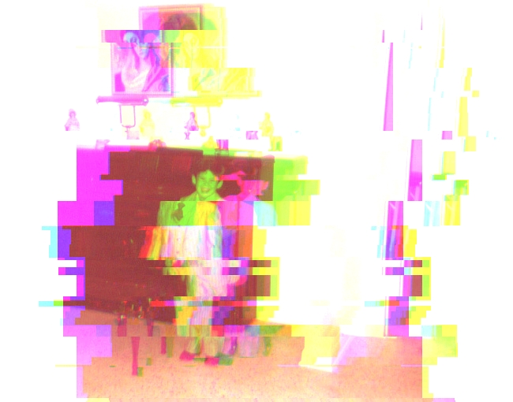
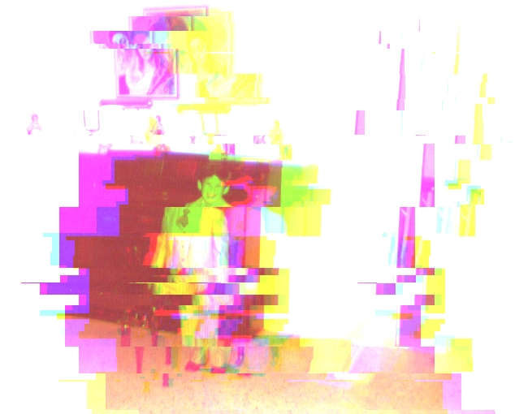
This is a placeholder for the text that will make up the first chapter of Rodrigo Constanzo's web thesis. This text can take many forms, attempting to explain the same concepts from different perspectives.
This is stand-in text for the text that will make up the first chapter of Rodrigo Constanzo's web thesis. This text can take many forms, attempting to explain similar ideas from different perspectives.
Here we have stand-in text for the text that will make up the first chapter of Rodrigo Constanzo's web thesis. This text can take a multiplicity of approaches whilst attempting to explain the same concepts from alternative viewpoints.
You are reading stand-in text for the text that will make up the first chapter of Rodrigo Constanzo's web thesis. This text can take a multiplicity of approaches whilst attempting to explain the same concepts from alternative viewpoints.
This is stand-in text for the text that will comprise the first chapter of the badass MF's web thesis. This text can take many forms, attempting to explain similar ideas from different perspectives.
Here we have stand-in text for the text that will make up the first chapter of Rodrigo Constanzo's web thesis. This text can take a multiplicity of approaches whilst attempting to explain the same concepts from alternative viewpoints.
This is stand-in text for the content that will make up the first chapter of the badass MF's web thesis. This text can take a multiplicity of approaches whilst attempting to explain the same concepts from different perspectives.
Here we have a placeholder for the text that will comprise the first chapter of Rodrigo Constanzo's web thesis. This placeholder can take a multiplicity of approaches whilst attempting to explain the same concepts from different perspectives.
This is a placeholder for the text that will make up the first chapter of Rodrigo Constanzo's web thesis. This placeholder can take a multiplicity of approaches whilst attempting to explain the same concepts from alternative viewpoints.
This is stand-in text for the content that will make up the first chapter of Rodrigo Constanzo's web thesis. This text can take a multiplicity of approaches whilst attempting to explain the same concepts from different perspectives.
You are reading a placeholder for the text that will comprise the first chapter of Rodrigo Constanzo's web thesis. This placeholder can take a multiplicity of approaches whilst attempting to explain the same concepts from different perspectives.
This is a placeholder for the content that will comprise the first chapter of Rodrigo Constanzo's web thesis. This placeholder can take many forms, attempting to explain similar ideas from alternative viewpoints.
Here we have a placeholder for the text that will comprise the first chapter of Rodrigo Constanzo's web thesis. This placeholder can take many forms, attempting to explain similar ideas from alternative viewpoints.
You are reading a placeholder for the content that will make up the first chapter of Rodrigo Constanzo's web thesis. This placeholder can take many forms, attempting to explain similar ideas from different perspectives.
You are reading stand-in text for the text that will make up the first chapter of Rodrigo Constanzo's web thesis. This text can take many forms, attempting to explain similar ideas from different perspectives.